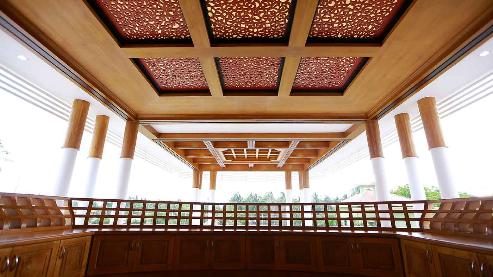

Materials chosen room by room
White marble floors and columns at Girish Villa. Teak and exposed timber at Iqbal Villa. Laterite and carved wood at Dr. Vikrant Residence.



Architecture · Interiors · Landscape · Kozhikode
Contemporary, traditional and colonial homes, planned and detailed by one studio in Kozhikode.
See our projectsWebsite concept for Darvish Architects
White marble floors and columns at Girish Villa. Teak and exposed timber at Iqbal Villa. Laterite and carved wood at Dr. Vikrant Residence.

At Girish Villa, a curved stairway sits on axis with the entrance. Crisp white walls and soft lighting carry through every floor.

At Rashid Villa, a waved ceiling and plenty of seating make the living room the hub of the house.

Six homes, including a 5,358 sq ft family home in Mumbai and a 13,639 sq ft residence in Bangalore.
Villas and residences planned around the family, the site and the climate.
Ceilings, floors, joinery and lighting detailed together with the building.
Gardens, courtyards and entrance approaches designed with the house.
Site plans for larger developments, resorts and cultural projects.
Darvish Architects is a team of architects, designers and consultants working from Chelavur, near Medical College in Kozhikode.
Chairman Darvish Kareem Muhammed leads the studio with managing director Ar. Ahammed Aflah, technical director Neethu Karnadas and director Gabish Kareem.
About the studio